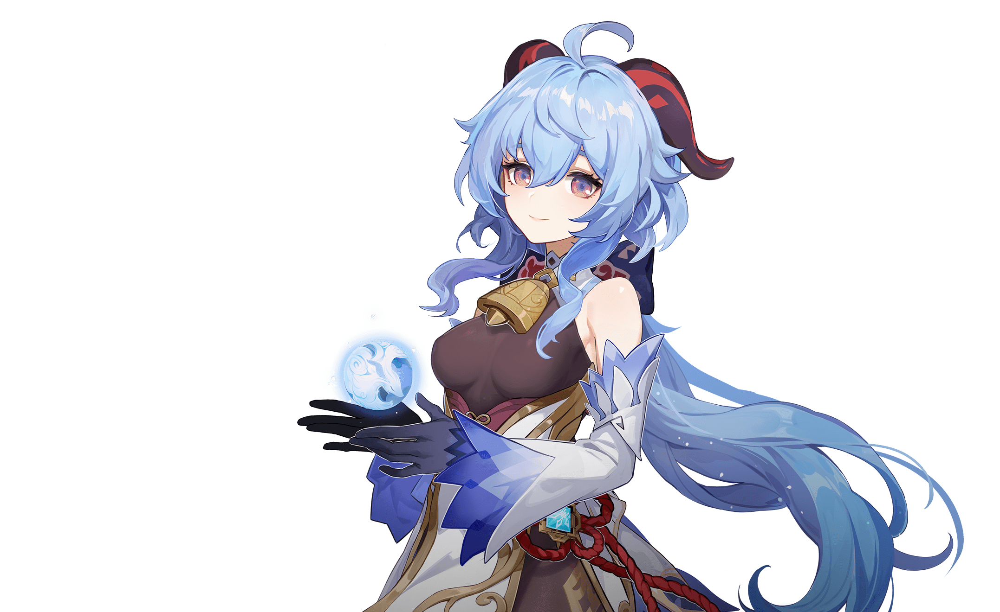
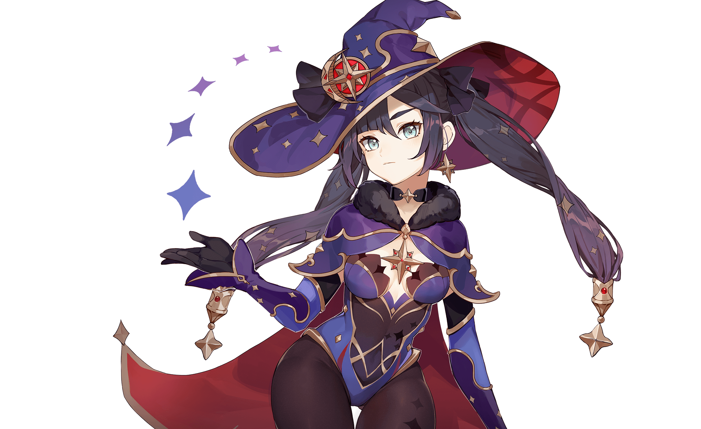

Kenshin Impact takes place in the fantasy world of , which is home to seven distinct nations, each of which is tied to an element and ruled by a god associated with it. .
Qiqi

An apprentice and herb gatherer at Bubu Pharmacy. "Blessed" by the adepti with a body that cannot die, this petite zombie cannot do anything without first giving herself orders to do it. Qiqi's memory is like a sieve. Out of necessity, she always carries around a notebook in which she writes anything important that she is sure to forget later. But on her worst days, she even forgets to look at her notebook...
Ganyu
The secretary to the Liyue Qixing. The blood of both human and illuminated beast flows within her veins. Graceful and quiet by nature, yet the gentle disposition of qilin sees not even the slightest conflict with even the most arduous of workloads. After all, Ganyu firmly believes that all the work she does is in honor of her contract with Rex Lapis, seeking the well-being of all living things within Liyue..
Keqing

The Yuheng of the Liyue Qixing. Keqing has much to say about Rex Lapis' unilateral approach to policymaking in Liyue — but in truth, gods admire skeptics such as her quite a lot. She firmly believes that humanity's future should be determined by humans themselves, and that they can even do better than the archons and adepti have done for them. In order to prove this, she works harder than anyone else.
Mona
A mysterious young astrologer who proclaims herself to be "Astrologist Mona Megistus," and who possesses abilities to match the title. Erudite, but prideful. Though she is often strapped for cash and lives a life of thrift, she is resolved to never use astrology for profit... It is this very resolution that has caused her to constantly fret about money..